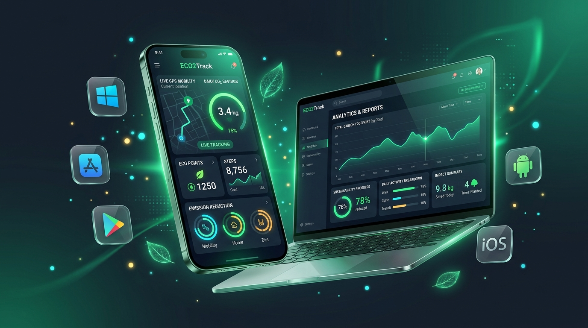

Selamat Datang di TerraStep
🌿 Tentang TerraStep & ECO₂Track
TerraStep adalah portal ekosistem terpadu yang mewadahi berbagai inovasi mobilitas cerdas dan kelestarian lingkungan. Di dalam website TerraStep, terdapat modul inti yang bernama ECO₂Track.
ECO₂Track bertugas melacak emisi mobilitas harian secara real-time, mengonversi langkah kaki dan kayuhan sepeda menjadi kompensasi emisi karbon yang terverifikasi, serta memadukan kalkulator stoikiometri kimia dan dinamika energi fisika untuk mewujudkan bumi yang lebih hijau.

Pembuat
Inovasi TerraStep & ECO₂Track ini diciptakan oleh:
File Setup
Unduh langsung empat berkas setup mandiri di bawah ini. Berkas akan langsung tersimpan di media penyimpanan (folder Downloads) perangkat Anda secara permanen.
WinOS
Aplikasi desktop untuk Windows 10 & 11.
Setup Mandiri • 26.6 KB
MacOS
Apple Disk Image untuk Mac (Apple Silicon & Intel).
Paket .dmg • 167 KB
Android
Paket instalasi APK native smartphone Android.
Paket .apk • 304 KB
iOS
Paket aplikasi iOS untuk iPhone dan iPad.
Berkas .ipa • 269 KB
Cara Kerja
Empat tahapan mudah dalam ekosistem TerraStep & ECO₂Track:
Pilih Moda
Tentukan aktivitas Anda: berjalan kaki, bersepeda, motor, mobil, bus, atau kereta.
Lacak Mobilitas
Sensor TerraStep dan GPS mencatat jarak perjalanan serta ritme langkah secara otomatis.
Hitung Emisi
Algoritma menghitung gram emisi CO₂ atau jumlah jejak karbon yang berhasil dihemat.
Raih Poin Hijau
Kumpulkan skor TerraStep, buka lencana kebanggaan, dan sinkronkan riwayat Anda.
Mulai Petualangan Anda
Tekan tombol start di bawah ini untuk membuka portal perangkat interaktif TerraStep dan menjelajahi seluruh aplikasi di dalamnya.